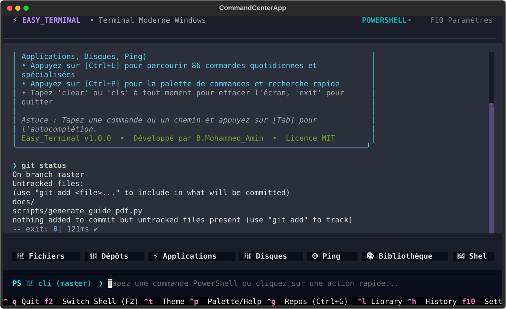
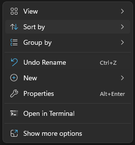
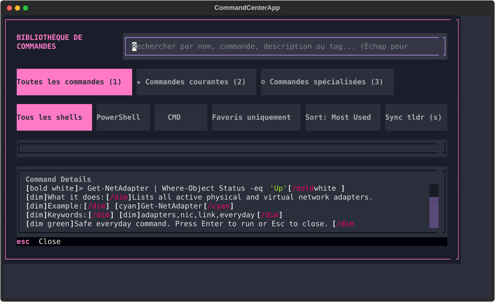
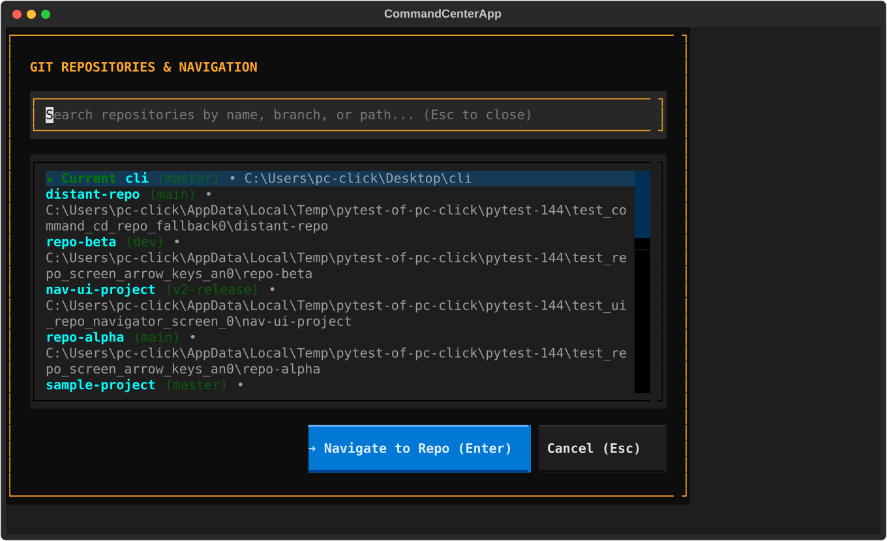
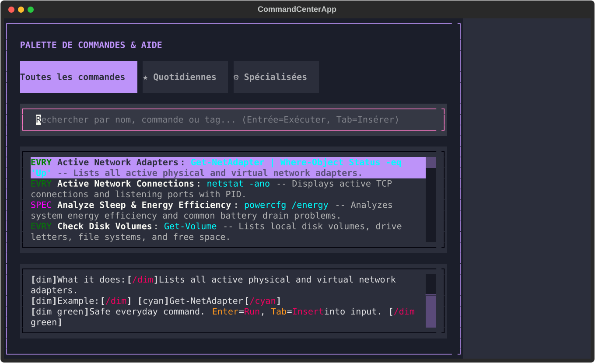
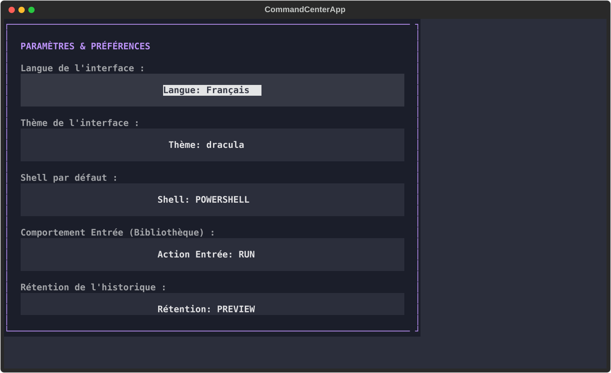

Easy_Terminal turns everyday terminal workflows into a visual, productive, and beginner-friendly experience. Built on top of native Windows shells (PowerShell, Command Prompt, and WSL), it provides visual buttons, smart auto-completion, instant project jumping, and safe command execution guards.
Switch between PowerShell, CMD, and WSL/Bash instantly with F2.
Built-in Command Library split into Everyday Common & Specialized developer tools (Ctrl+L).
Complete multi-language interface with English and French switching in settings (F10).

clear or cls anytime to wipe output.
Easy_Terminal is distributed in two editions to fit every workflow and environment:
File: Easy_Terminal-Setup.exe
File: Easy_Terminal-Portable.zip
data/ folder.%APPDATA% on host computers.Launch Easy_Terminal directly inside any project folder or drive partition from the Windows Explorer context menu:

Upon first launch, Easy_Terminal displays a beginner guide with essential shortcuts. The status bar displays your current working directory and Git branch.
Easy_Terminal is organized into four distinct visual zones:
Displays active shell mode (Shell: PowerShell / CMD / WSL), active Git repository badge (e.g. cli (master)), and quick menu shortcuts.
Scrollable rich output terminal. Every command displays its exit status code and real-time execution duration (e.g. exit: 0 | 502ms ✓).
Seven pre-configured, one-click visual buttons providing instant access to everyday commands without typing.
Syntax-highlighted input bar featuring intelligent tab completion, command history (↑/↓), and real-time safety guard.
Located directly above the input prompt, these buttons give rapid access to common tasks:
| Button | Underlying Action | Description |
|---|---|---|
| 📁 Files | Get-ChildItem / dir |
Lists files and folders in current directory with sizes and dates. |
| ⚡ Top Apps | Process monitor | Displays the most resource-intensive applications currently running. |
| 💾 Disks | Get-PSDrive / wmic |
Shows available storage, free space, and partitions across all drives. |
| 🌐 Ping | Test-Connection |
Performs a quick network latency check to verify internet connectivity. |
| 📚 Library | Ctrl+L | Opens the built-in library of 86+ categorized commands. |
| 🐚 Shell | F2 | Cycles instantly between PowerShell, Command Prompt, and WSL. |
| 🧹 Clear | Clear-Host / cls |
Wipes the output log for a clean workspace. |
rm -rf /, del /s *, or format) are submitted, Easy_Terminal pauses and prompts for confirmation to prevent accidental data loss.
Never memorize complex flags or shell syntax again. Easy_Terminal includes an organized library of 86 everyday and advanced commands, divided cleanly into two logical categories:

Essential daily commands for all users:
Professional tools for developers and power users:
Working on multiple codebases? Easy_Terminal automatically discovers and registers Git repositories on your computer, allowing you to jump between projects instantly without typing long paths.

Every time you navigate to a directory containing a .git repository, Easy_Terminal records it and tracks its active branch.
Select any repository from the list and press Enter. The active shell changes directory immediately and updates the top status badge.
goto <repo-name> or repos in the prompt.
Press Ctrl+P anytime to open the global fuzzy command palette. Search across all app functions, settings, history, and shell utilities by typing any keyword.

Type non-consecutive letters (e.g. pows for PowerShell or sett for Settings) to instantly locate actions.
Each palette entry shows its associated direct keybinding, helping you learn shortcuts organically.
Configure Easy_Terminal to match your preferred language (English / Français), default shell, and safety prompt settings:

| Shortcut | Action | Description |
|---|---|---|
| Ctrl+L | Command Library | Browse 86+ everyday and specialized commands. |
| Ctrl+P | Command Palette | Global fuzzy search across commands and features. |
| Ctrl+G | Git Repositories | Jump directly between tracked Git code repositories. |
| F2 | Switch Shell | Toggle dynamically between PowerShell, CMD, and WSL/Bash. |
| Ctrl+H | Command History | View, filter, and rerun previously executed shell commands. |
| Ctrl+T | Toggle Theme | Cycle color themes (Modern Dark, Matrix Green, Midnight). |
| Ctrl+Y | Copy Output | Copies the output of the last command to Windows clipboard. |
| Ctrl+R | Restart Shell | Restarts the active backend shell process without closing UI. |
| F10 | Settings | Configure language (English/French), default shell, safety. |
| Tab | Auto-Complete | Autocompletes file names, folders, and command names. |
| Ctrl+C | Interrupt / Clear | Interrupts running execution or clears current prompt line. |
| Ctrl+Q | Quit | Exits Easy_Terminal cleanly. |